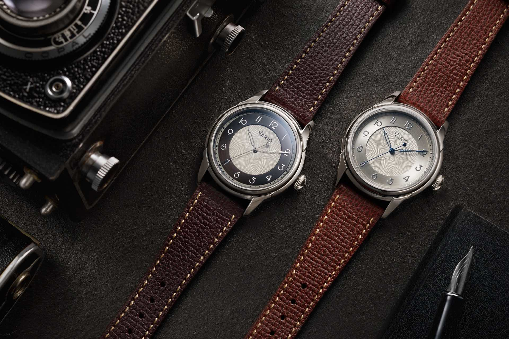

Technology Advancements
The world is now driven by advanced technology, and the watch industry has evolved significantly from pocket watches to smartwatches. Let’s explore the key milestones in watch design and technology over the decades:
The evolution of watch designs has been a fascinating journey, marked by technological advancements, changing fashion trends, and evolving consumer preferences. Here are the key milestones:
- Early 1900s: Pocket Watches
- 1920s-1930s: Art Deco Influence
- 1940s-1950s: World War II and Utility Watches
- 1960s-1970s: Space Age and Quartz Revolution
- 1980s-1990s: Luxury and Sports Watches
- 2000s: Digital and Smartwatches
- 2010s-Present: Return to Classic and Hybrid Designs
In the early 20th century, pocket watches were the trend. They featured intricate engravings, were often made of precious metals, and had a classic round shape. Pocket watches were primarily carried in a person's pocket, attached to a chain.

During this period, watches were influenced by the Art Deco movement. They became smaller and more streamlined, with geometric shapes and bold, symmetrical patterns. Rectangular and square cases gained popularity, and dial designs became more minimalist and sophisticated.
During World War II, wristwatches gained prominence due to their practicality in military operations. Utility watches, also known as “military watches,” were designed for legibility and durability. They typically had larger cases, luminous dials, and robust construction.

The 1960s and 1970s saw the rise of space-age aesthetics and the quartz revolution. Quartz technology revolutionized watch design, offering high accuracy and affordability. Watches featured bold colors, asymmetrical cases, and unconventional materials.

This period witnessed the rise of luxury watches from brands like Rolex, Omega, and Cartier. Simultaneously, sports watches gained popularity, featuring enhanced water resistance, chronograph functions, and robust designs.
The 2000s were marked by the introduction of digital watches and the emergence of smartwatches. Digital watches offered features like alarms, timers, and multiple time zones. Smartwatches integrated fitness tracking, smartphone connectivity, and app compatibility.
In recent years, there has been a resurgence of classic and vintage-inspired watch designs. Many brands introduced reissued models, paying homage to their historical timepieces. Hybrid watches, combining traditional mechanical movements with smart functionalities, have also gained popularity.